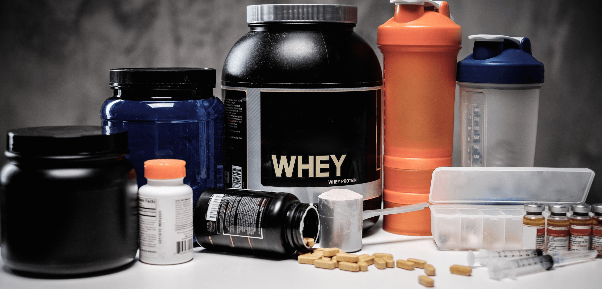
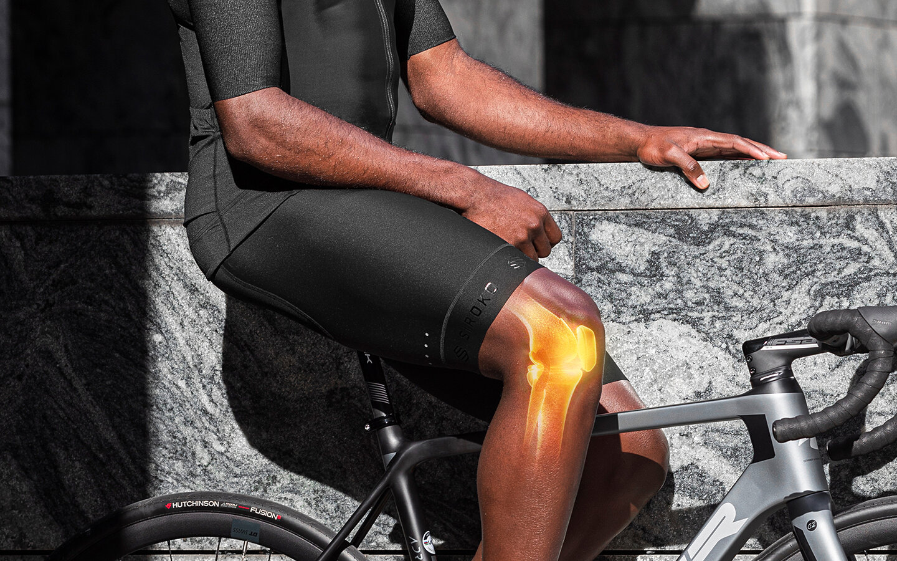
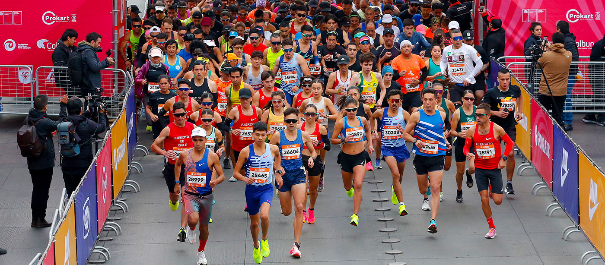
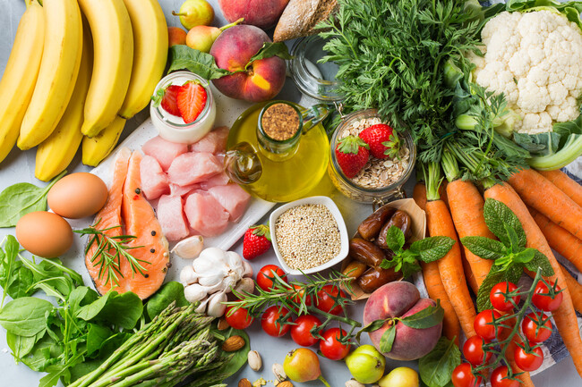
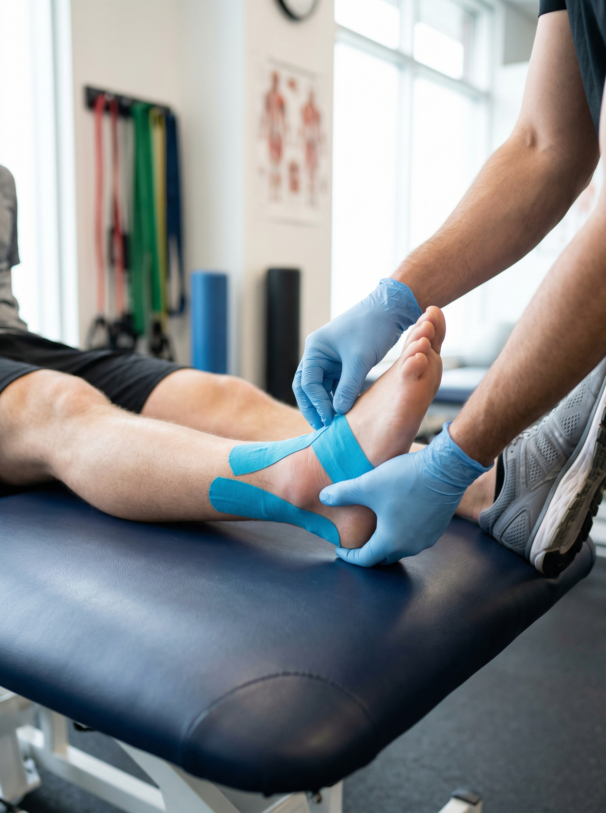

Blog de Salud y Rendimiento Deportivo
Como expertos en salud deportiva, nuestro objetivo no es solo tratar — es informar. Por eso nuestros especialistas escriben regularmente sobre quiropraxia, kinesiología, nutrición y entrenamiento: artículos con evidencia clínica real, para que puedas cuidarte y rendir mejor.

Últimas publicaciones

Suplementos para deportistas: qué funciona y qué no
Guía honesta basada en evidencia: cuáles tienen respaldo científico real, cuáles son puro marketing y cómo elegir.

Tendinitis rotuliana en ciclistas: guía completa
Diagnóstico, tratamiento basado en evidencia, ejercicios HSR e isométricos, bike fit y vuelta a la bici sin recaídas.

Cómo periodizar tu entrenamiento para una carrera de 10K
Plan de 12 semanas con bloques, distribución 80/20, semana tipo y tapering para llegar en forma a tu próximo 10K.
Dolor lumbar en runners: causas y tratamiento
Por qué duele la espalda baja al correr, cómo identificar las señales de alerta y qué tratamiento funciona realmente.

¿Qué comer antes de entrenar? Guía de nutrición pre-entrenamiento
Qué alimentos elegir, cuánto tiempo antes de entrenar y qué errores evitar para no perder energía durante el ejercicio.

Esguince de tobillo: cómo rehabilitarlo correctamente
Guía completa de rehabilitación: fases de recuperación, ejercicios recomendados y señales de cuándo volver al deporte.